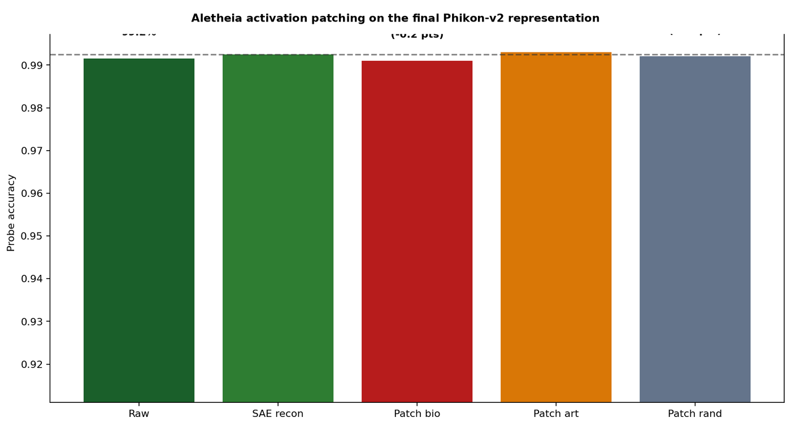
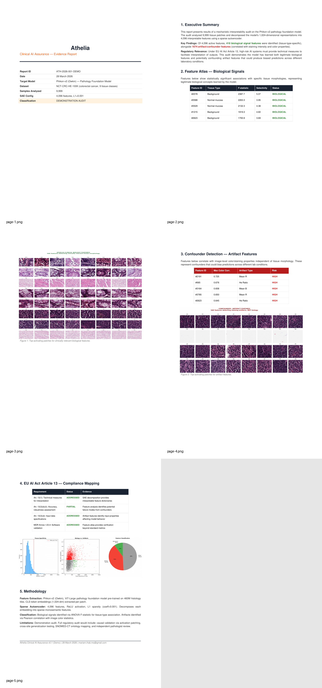

Experiment overview
What the model learned — and what it shouldn’t have.
A sparse autoencoder trained on the final CLS representations of Phikon-v2 decomposed each 1,024-dimensional embedding into a sparse combination of 4,096 features. Each feature corresponds to a single concept the model has encoded during pre-training. We classified every feature by its correlation with tissue type (biological signal) versus staining properties (preparation artifact).
4,096
Sparse features
SAE dictionary size
410
Biology features
Tissue-linked, clean
1,674
Artifact-sensitive
Stain/color-correlated
9
Tissue classes
Colorectal histology
79
Matched pairs
Used in ablation
Core finding
Two classification pathways, one metric.
The model contains two parallel pathways for tissue classification. One is grounded in morphology — gland architecture, cell shape, stromal density. The other encodes tissue type through staining intensity and color properties that are specific to the preparation protocol used in the training dataset. Standard accuracy metrics conflate both pathways. The morphology pathway is robust; the staining pathway is brittle.
Clean biology features
Features identified410
High tissue specificity✓
Low color correlation✓
Cross-style stability (|d|)0.21
Biology-only probe accuracy97.0%
Top features: goblet cell density, crypt architecture, smooth muscle morphology, stromal pattern, tumour nest boundary. Consistent with established histological grading criteria.

Figure 1 — Top-activating patches for SAE features classified as biological signal. Each row corresponds to a single sparse feature. Patches are sorted by activation strength. Tissue types (NORM, MUS, LYM) cluster within features, confirming tissue-specific encoding.
Artifact-sensitive features
Features identified1,674
Mixed tissue types★
High color correlation★
Cross-style stability (|d|)0.78
Artifact-only probe accuracy91.2%
These features confound tissue types with staining darkness. Within one lab, the correlation holds. Across labs with different protocols, it breaks. The model has learned to associate color intensity with tissue classification.

Figure 2 — Top-activating patches for artifact-sensitive features. Mixed tissue types within each feature (MUC, NORM, TUM) indicate the feature encodes appearance rather than morphology. Strong colour correlation visible across rows.
Key insight: The artifact-sensitive features are not noise. They carry real tissue information — but through the wrong channel. They encode tissue type via appearance properties that are protocol-specific. Standard evaluation cannot separate these pathways. SAE-based decomposition can.
Ablation study
Causal validation: which features does the model depend on?
Matched sets of 79 clean biology features and 79 artifact-sensitive features were tested via ablation. Each feature set was either isolated (used alone) or removed (zeroed out) while measuring downstream classification accuracy. This establishes causal dependency — not just correlation.
Ablation results — 79 matched features per condition
Combined baseline (all selected)
97.8%
Artifact-only probe
91.2%
Remove artifact features
87.9%
Remove biology features
48.1%

Figure 3 — Ablation study results. Combined baseline (97.8%) nearly matches biology-only (97.0%). Removing biology features collapses accuracy to 48.1%, confirming causal dependence on morphological signal.
Reading these results: The biology features are sufficient — 97.0% accuracy from 79 features alone, nearly matching the full baseline. Removing them collapses the model to 48.1%. The artifact features are not noise — 91.2% accuracy alone is substantial — but they encode tissue type through protocol-specific appearance, not morphology. The model partially relies on both pathways.
Representation-level validation
Activation patching at the embedding level.
To confirm the ablation findings hold at the representation level (not just downstream probe level), we ran activation patching on the final normalised CLS representation before the embedding-level probe.
SAE reconstruction accuracy under patching
SAE reconstruction baseline99.25%
Patched biology set99.10%
Patched artifact-sensitive set99.30%
Patched random set (control)99.20%

Figure 4 — Activation patching on the final Phikon-v2 CLS representation. All conditions maintain probe accuracy above 99.0%, confirming SAE decomposition fidelity is not the source of observed ablation effects.
All patching conditions maintain reconstruction fidelity within 0.15% of baseline, confirming that the SAE decomposition is stable and that downstream effects are attributable to feature-level semantics rather than reconstruction artifacts.
Cross-style stability
Biology features are stable. Artifact features are not.
We measured feature activation stability between two apparent preparation clusters in the dataset (n = 5,160 vs n = 4,839) using Cohen’s d effect size. These clusters are not verified institution labels, but they correlate with visible staining differences.
Clean biology features
0.21
Median |Cohen’s d| across styles
Small effect size. Biology features activate consistently regardless of staining variation. These are the features you want a model to rely on.
Artifact-sensitive features
0.78
Median |Cohen’s d| across styles
Large effect size. Artifact-sensitive features shift substantially between preparation styles. A model relying on these features will degrade when deployed to a new lab.

Figure 5 — Cross-style stability analysis. Left: Biology features show low effect size (median |d| = 0.21) vs artifact features (median |d| = 0.78). Centre and right: scatter plots of mean activation per feature across inferred preparation clusters.
Deployment implication: A model that partially relies on stain-sensitive features (as this one does — 91.2% accuracy from artifact features alone) is vulnerable to silent performance degradation when tissue processing protocols change. This is the exact failure mode that cross-site validation audits exist to catch.
Interpretation
Two pathways, one honest read.
The strongest honest interpretation is that the model contains two usable pathways at once: a morphology-dominant pathway that remains highly predictive on its own, and a stain-sensitive pathway that still carries substantial label information. The morphology pathway is sufficient (97.0%). The staining pathway is not negligible (91.2%). Standard metrics cannot distinguish between them.

Figure 6 — Evidence pack overview. Structured report pages covering executive summary, feature atlas, confounder detection, regulatory mapping, and methodology documentation.
Evidence pack summary
EP-01
Feature atlas: 4,096 sparse features extracted, 410 classified as tissue-linked biological signal, 1,674 as artifact-sensitive.
EP-02
Ablation validation: Biology features are both necessary (removal → 48.1%) and sufficient (isolation → 97.0%). Artifact features carry real label information (91.2%) but via preparation-correlated channels.
EP-03
Cross-style stability: Biology features stable across preparation variants (|d| = 0.21). Artifact features shift substantially (|d| = 0.78).
EP-04
Representation fidelity: SAE reconstruction maintains 99.1–99.3% accuracy under all patching conditions, confirming decomposition validity.
Aletheia’s purpose is not to pretend the shortcut pathway is the whole model. It is to make that mixed reliance visible, testable, and reviewable — so that deployment decisions are made with full knowledge of where the model’s accuracy comes from.